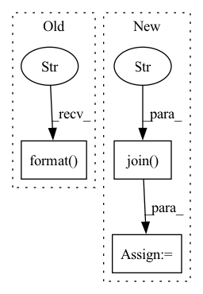

Pattern ID :16415
Before Change
for key, fn in files:
data[key] = np.loadtxt(fn)
print("[makenpz] generating {}".format( outp) )
np.savez_compressed(outp, **data)
After Change
inp = os.path.normpath(args.dirname)
outp = inp + ".npz"
else:
inp = os.path.join( os.path.abspath(os.path.dirname(__file__)),
"..", "tests" , "data", args.dirname)
outdir_abs = os.path.join(os.getcwd(), args.outdir)
outp = os.path.join(outdir_abs, args.dirname + ".npz")
// Skip rebuilding if no sourcesIn pattern: SUPERPATTERN
Frequency: 3
Non-data size: 3
Instances Fragment ID: 55210778
Project Name: scipy/scipy
Commit Name: d7da18962ea09a405036faf7f00d2cc0ef25dc46
Time: 2021-12-29
Author: ralf.gommers@gmail.com
File Name: scipy/special/utils/makenpz.py
M Class Name: AnonimousClass
N Class Name: AnonimousClass
M Method Name: main(0)
N Method Name: main(0)
M Parent Class:
N Parent Class:
M File Name: scipy/special/utils/makenpz.py
N File Name: scipy/special/utils/makenpz.py
M Start Line: 22
M End Line: 61
N Start Line: 16
N End Line: 35
Before Change
load_name_tmp = "ep_" + str(load_epoch) + ".m"
self.model.load_state_dict(
torch.load(self.tmp_path + load_name_tmp))
print("load epoch={} model state".format( load_epoch) )
if lr <= 0.9 * 1e-5:
break
best = np.argmax(metrics["accuracy"]) // 这个不是最好的一次吗？After Change
if self.config["hyper_tune"]:
// use ray tune to checkpoint
with tune.checkpoint_dir(step=epoch) as checkpoint_dir:
path = os.path.join( checkpoint_dir, "checkpoint" )
self.save_model(path)
// ray tune use loss to determine which params are best
tune.report(loss=avg_eval_loss, accuracy=avg_eval_acc)
else: Fragment ID: 55210791
Project Name: libcity/bigscity-libcity
Commit Name: 022010c6ffc7ff440e276127d6e6341751e03d69
Time: 2021-04-14
Author: 33283819+WenMellors@users.noreply.github.com
File Name: trafficdl/executor/traj_loc_pred_executor.py
M Class Name: TrajLocPredExecutor
N Class Name: TrajLocPredExecutor
M Method Name: train(3)
N Method Name: train(3)
M Parent Class: AbstractExecutor
N Parent Class: AbstractExecutor
M File Name: trafficdl/executor/traj_loc_pred_executor.py
N File Name: trafficdl/executor/traj_loc_pred_executor.py
M Start Line: 24
M End Line: 74
N Start Line: 33
N End Line: 71
Before Change
// del chkpt
def __save_model_weights(self, epoch, loss):
weight = os.path.join(os.path.split(self.weight_path)[0], "epoch{}, loss{}.pt".format( epoch,loss) )
chkpt = {"epoch": epoch,
"model": self.yolov4.state_dict(),
"optimizer": self.optimizer.state_dict()}After Change
if mAP > self.best_mAP:
self.best_mAP = mAP
best_weight = os.path.join(os.path.split(self.weight_path)[0], "best.pt")
last_weight = os.path.join( os.path.split(self.weight_path)[0], "last.pt" )
chkpt = {"epoch": epoch,
"best_mAP": self.best_mAP,
"model": self.yolov4.state_dict(),
"optimizer": self.optimizer.state_dict()} Fragment ID: 55210789
Project Name: argusswift/yolov4-pytorch
Commit Name: 2e9ce6dbdb27a756a089d751b7a32e7d8b8a997f
Time: 2020-07-28
Author: your email
File Name: train.py
M Class Name: Trainer
N Class Name: Trainer
M Method Name: __save_model_weights(3)
N Method Name: __save_model_weights(3)
M Parent Class: object
N Parent Class: object
M File Name: train.py
N File Name: train.py
M Start Line: 103
M End Line: 107
N Start Line: 86
N End Line: 101